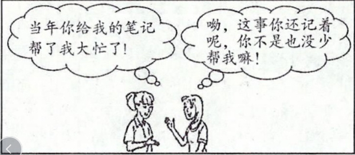
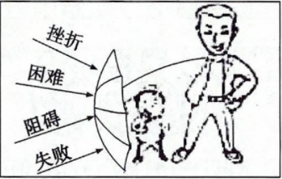
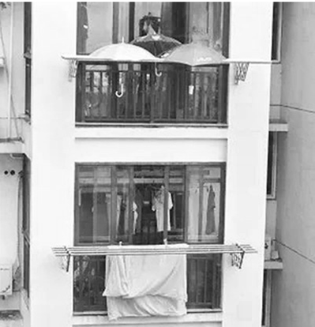

2020年北京市中考政治试题 · 选择题 第6、7、8、9、10题
6. 图中的对话告诉我们（ ）

①在互帮互助中建立友谊
②要学会坦然接受新朋友
③友情能带给人持久的温暖
④每一段友谊都会地久天长
A. ①②B. ①③C. ②④D. ③④
7. 一位世界著名的指挥家说：“我只强调三个音，使我的乐队变成团队。第一是‘起音’，起音不齐，乐曲就乱。第二是个人的‘专业音’，不管是吹号的还是打鼓的，都要表现出自己在专业上最好的、最精准的音。第三是‘团队音’，当你展示自己的‘专业音’时，还要考虑到整体，是否会干扰别的人的音。”这段话表明（ ）
①集体规则会限制个人专业发展
②展示白己能确保集体的“和声”更美
③美好的集体一定有共同的规则
④共同目标和团队协作是集体力量之源
A. ①②B. ①③C. ②④D. ③④
8. 如果对图中的家长说一句话，最恰当的是（ ）

A 羊有跪乳之恩，鸦有反哺之义
羊有跪乳之恩，鸦有反哺之义
B. 不以规矩，不成方圆
C. 宝剑锋从磨砺出
D. 爱人者，人恒爱之
9. 新疆帕米尔高原上，麦麦提努尔是家族里的第三代护边员，他守护的区域好多地段是无人区。巡边的路寒冷又漫长，他一走就是二十多年。如今，女儿也加入了护边队。“一家四代接力守边”的事迹表明（ ）
①国家利益与个人利益不会发生矛盾
②子女应该继承父辈的职业
③他们积极履行维护国家安全的义务
④国家利益要依靠人民艰苦奋斗来实现
A. ①②B. ①③C. ②④D. ③④
10. 下雨了，楼下住户 被子还晾在外面，楼上的住户在白家阳台的晾衣架上支起了三把伞。“三把伞”撑起的是（ ）
被子还晾在外面，楼上的住户在白家阳台的晾衣架上支起了三把伞。“三把伞”撑起的是（ ）

A. “真诚老实，笃守诺言”的良好品质
B. “严于律己，宽以待人”的行为准则
C. “己所不欲，勿施于人”的交往之道
D. “乐于助人，与人为善”的美好品德